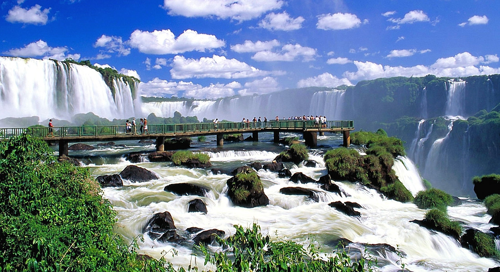

×

Argentina
Гимн
Слушайте смертных священный крик
Oíd mortales, el grito sagrado
Свобода, свобода, свобода
Libertad, libertad, libertad
Услышьте шум сломанных цепей
Oíd el ruido de rotas cadenas
Смотрите трон на благородное равенство
Ved el trono a la noble igualdad
Уже к его достойному престолу они открыли
Ya a su trono dignísimo abrieron
Соединенные провинции Юга
Las provincias unidas del sur
И свободный мир откликается
Y los libres del mundo responden
Ура великому аргентинскому народу
Al gran pueblo argentino salud
Ура великому аргентинскому народу
Al gran pueblo argentino salud
И свободный мир откликается
Y los libres del mundo responden
Ура великому аргентинскому народу
Al gran pueblo argentino salud
И свободный мир откликается
Y los libres del mundo responden
Ура великому аргентинскому народу
Al gran pueblo argentino salud
Пусть лавры будут вечными
Sean eternos los laureles
Что мы знали, как достичь
Que supimos conseguir
Что мы знали, как достичь
Que supimos conseguir
Увенчанный славой
Coronados de gloria
Давай жить
Vivamos
О, давайте поклянемся во славе умереть
Oh, juremos con gloria morir
О, давайте поклянемся во славе умереть
Oh, juremos con gloria morir
О, давайте поклянемся во славе умереть
Oh, juremos con gloria morir
____